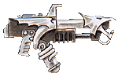

Imperial Forces |
Force Disposition Introduction |
Ork Forces |
|
The Black Dragons were founded just prior to the Age of Apostasy, a time of civil war and bloodshed that almost saw the Imperium destroyed. It was a dark time for the Imperium when worlds were destroyed on the whims of the insane Lord Vandire. Perhaps these days of ill omen cursed the founding of the Black Dragons from the beginning or perhaps it was the debased and ritualised medical practices of the Magos Biologis chirurgeons. Whatever the reason it did not take long before the flaw inherent in their gene-seed to become apparent.
One of the many zygotes neophytes are implanted with is the Ossmodula. This small organ has a complex function within the body of a Space Marine. It monitors and secretes hormones affecting epiphiseal fusion and ossification of the skeleton while at the same time, engineered hormones encourage the forming bones to absorb ceramic based chemicals administered in the Marine's diet. Two years following implantation, the long-bones will have strengthened considerably and there will have been a general increase in the size of the recipient's skeleton. Extreme ossification of the chest cavity caused by growth of ribs forming a solid mass of inter-laced bone plates provides a Space Marine with an armoured layer to protect his secondary heart and lungs.
|
| ||||||||||||||||||||||||||||||||||||||||||||||||||||||||
|
But the Ossmodula zygote of the Black Dragons functions in an abnormal way causing the growth of bony crests on the head, and blade-like protuberances from the forearm and elbow. Like the Death Company of the Blood Angels, warriors inflicted with such abnormal developments are formed into a separate fighting unit. Known as the Dragon Claws, they sharpen these additional protrusions to a killing edge, and sheath them in adamantium to turn them into deadly close combat weapons. This strains the tolerance of the Inquisition and their are many recorded instances of other Space Marine Chapters (notably the Dark Angels and Marines Malevolent) refusing to fight alongside them. It is even rumoured that the Black Dragon Apothecaries deliberately encourage such growths, even going so far as to knowingly implant aberrant zygotes into some initiates. This is exceptionally dangerous, and the practice is forbidden by Imperial edict. But old traditions die hard as the ferocity of the Dragon Claws is much valued by the Chapter Masters.  Each Chapter is required to send 5% of its genetic material to the Adeptus Mechanicus on Mars. This 'tithe' serves two purposes, enabling the Adeptus Mechanicus to monitor the health of each Marine Chapter and store gene-seed with a view to founding new Chapters. The Adeptus Mechanicus has on several occasions threatened the Black Dragons with military action unless it complies with this decree and even when the Chapter has submitted genetic data, its veracity has often been considered suspect as each sample provided has passed the most stringent genetic purity checks without fail. Without being able to prove anything, many Adepts believe that the Black Dragons submit genetic material culled from other sources. How this can be possible is unknown and the Adeptus Mechanicus is eager to fully investigate the medical practices within the Black Dragons. | |||||||||||||||||||||||||||||||||||||||||||||||||||||||||